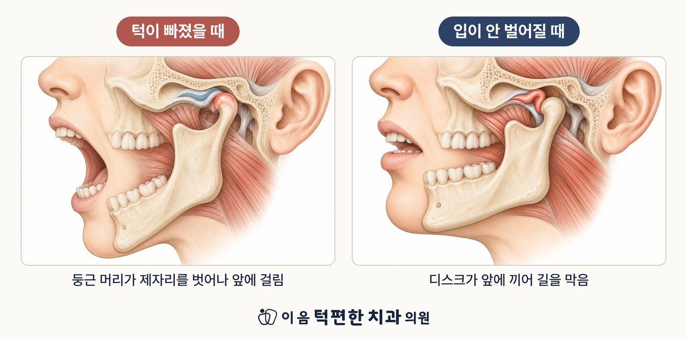

턱이 빠지면 입이 크게 벌어진 채 다물어지지 않습니다. 손으로 밀어 맞추려 하지 마세요.
턱이 잠기면 손가락 두 개 폭 정도에서 걸립니다. 억지로 벌리지 마세요.
두 상황 모두 시간이 지날수록 되돌리기 어려워집니다. 가장 중요한 것은 빨리 진료받는 것입니다.
얼굴을 다친 뒤이거나 붓기·열이 함께 있다면 골절 같은 다른 문제일 수 있습니다. 바로 진료가 필요합니다.
문에 비유하면 턱이 빠진 것은 문짝이 경첩에서 빠진 상태이고, 턱이 잠긴 것은 문틈에 무언가 끼어 문이 안 열리는 상태입니다.
턱이 빠지면 아래턱뼈 끝의 둥근 머리가 제자리를 벗어나 앞쪽 턱에 걸립니다. 말이 어눌해지고 침을 삼키기 어려워집니다. 하품, 큰 음식 베어 물기, 긴 치과 치료처럼 입을 오래 크게 벌린 뒤에 잘 생깁니다.
턱이 잠기면 관절 속 디스크가 앞으로 밀려나 길을 막아, 입이 어느 선 이상 벌어지지 않습니다. 더 벌리려 하면 아픕니다.
| 구분 | 턱이 빠졌을 때 | 입이 안 벌어질 때 |
|---|---|---|
| 입 모양 | 벌어진 채 안 다물어짐 | 손가락 두 개 폭 이상 안 벌어짐 |
| 잘 생기는 상황 | 하품, 큰 음식, 긴 치과 치료 | 아침에 갑자기, 소리가 나던 턱에서 |
| 하지 말 것 | 손으로 밀어 맞추기 | 억지로 벌리기 |
| 해야 할 것 | 바로 치과·응급실 | 빨리 턱관절 진료 |
원래 '딱딱' 소리가 나던 턱에서 어느 날부터 소리가 사라지면서 입이 덜 벌어진다면, 밀려났다 돌아오던 디스크가 돌아오지 못하게 된 신호일 수 있습니다. 이때는 완전히 잠기기 전에 진료를 받으시는 것이 좋습니다.
한 번 빠진 턱은 다시 빠지기 쉽습니다. 턱을 잡아 주는 인대가 늘어나기 때문입니다.
처음부터 큰 치료를 권하지 않습니다. 턱 운동, 물리치료, 교합안정장치(스플린트)처럼 되돌릴 수 있는 치료부터 차례로 진행해, 관절이 스스로 회복할 길을 열어 주는 것을 먼저 합니다.
턱이 잠기려는 신호가 보인다면 완전히 잠기기 전에 확인해 드립니다.
전화 상담 02-6745-2754이 페이지는 일반적인 건강정보이며 개인의 진단이나 치료를 대신하지 않습니다. 증상이 지속되거나 갑자기 악화되면 의료기관에서 진료를 받으시기 바랍니다.